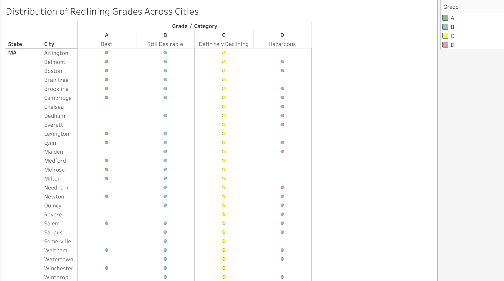
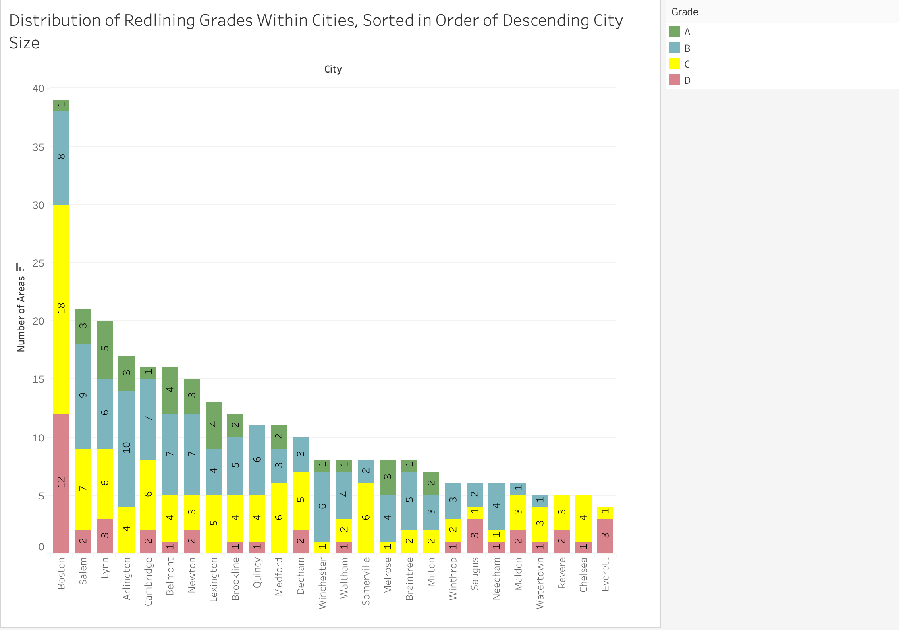
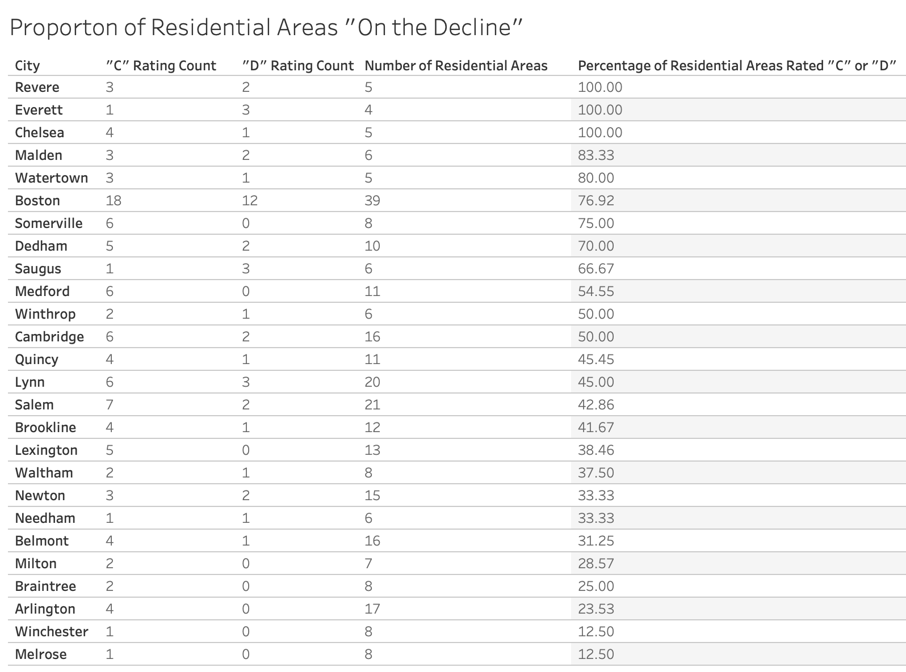
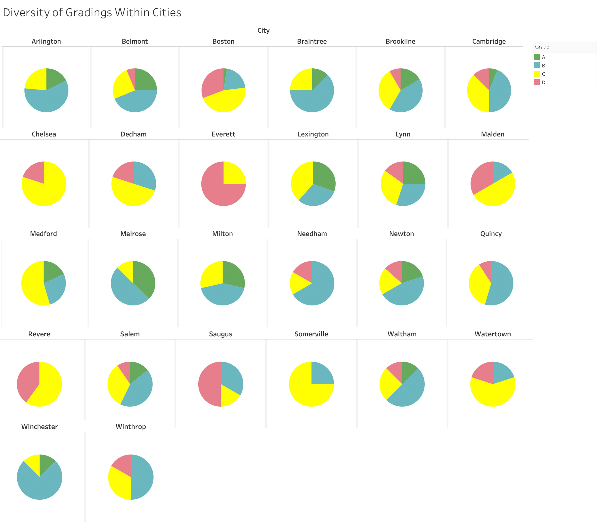
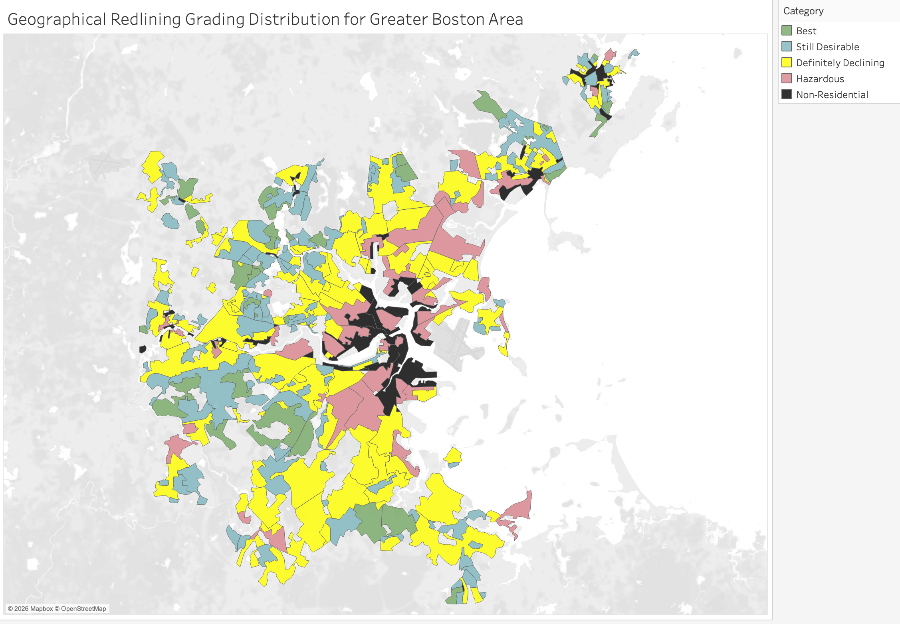
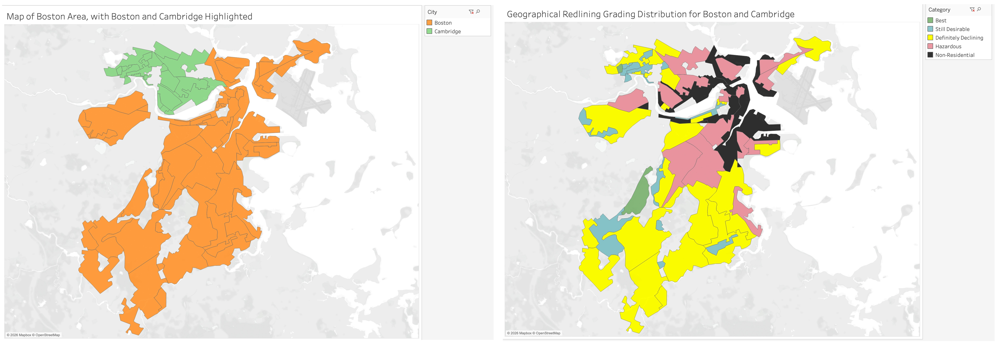

Subtheme: Historical Harms, Contemporary Effects
Overall Analysis Questions
- What cities in the Greater Boston area had the largest percentage of areas graded "C - Definitly declining" and "D - Hazardous"? I want to explore this question because I expect that larger cities will have higher percentages of areas graded as "C" or "D" because larger cities were more attractive for people - including African Americans and other minorities - to migrate to due to the higher concentration of opportunities for better jobs, schools, and other resources. Increased presence of African Americans and other minorities was a main factor that the Home Owners' Loan Corporation used to decide that an area was either declining ("C" grade) or already hazardous and not worth investment ("D" grade), so I expect to see this attitude reflected in the relationship between city size and percentage of areas rated as "C" or "D".
- How diverse were the gradings for the different areas of large cities (>=10 area IDs) in the Greater Boston area? I'm curious about this after reading the section on redlining from bostonfairhousing.org because it discusses how whole neighbourhoods would be marked as areas where financial institutions should not invest, so I wonder how common it was for a city to have great variation in grading or if gradings tended to be the same for a whole city.
- What does the distribution of gradings within cities look like geographically? With this question, I want to explore how much neighbouring areas shared the same grading. I intuitively expect that neighbouring areas will largely share the same gradings as redlining aimed to underdevelop entire neighbourhoods that weren't "white and rich enough", but I'm curious about the extent to which areas with the same gradings existed as dense pockets in the city vs more distributed spatters across the city.
Discoveries & Insights





Another powerful insight from this figure is that we can see that in Boston (where the non-residential areas are most densely concentrated) there is the most clear clustering of "D - Hazardous" areas, which reflects the fact that Boston was the largest city in the area and thus had the most industrial and commercial areas. Furthermore, this dense concentration of commercial and industrial areas in Boston could have contributed to the clustering of "D" areas, as these areas were often deemed less desirable for residential living due to the presumably high level of activity associated with a major city. However, this sentiment might have been one that only those privileged enough to have the means to transport themselves to less central areas could afford to have. Following this thinking, it would also make sense for the areas surrounding the non-residential areas to be graded as "D" because they were more likely to have a large population of non-white residents looking for available work, who were also more likely to be affected by the negative effects of being close to commercial and industrial areas (e.g. pollution, noise, etc.) but less likely to have the means to move to a more desirable area.

In Boston, we can see that the largest "D - Hazardous" area contains Roxbury and Dorchester, two of the three neighbourhoods where two-thirds of Boston's Black residents lived according to the 2020 Boston Magazine article "How Has Boston Gotten Away with Being Segregated for So Long?" by Catherine Elton. It's incredibly interesting to see that these areas were already marked as "hazardous"in the 1930s, as it makes me wonder about the extent to which the redlining practices contributed to the current racial segregation in Boston, and how much of the current segregation is a reflection of the segregation that already existed at the time. Both Boston's and Cambridge's residential areas are mostly graded as "D - Hazardous" and "C - Definitely Declining", which makes me wonder how much this grading of "low residential security" - which led to lack of investment in providing residences in these areas - contributed to the current housing crisis in Boston and Cambridge, where there is a severe shortage of affordable housing.
Summary
WRITE FINAL SUMMARY HERE.